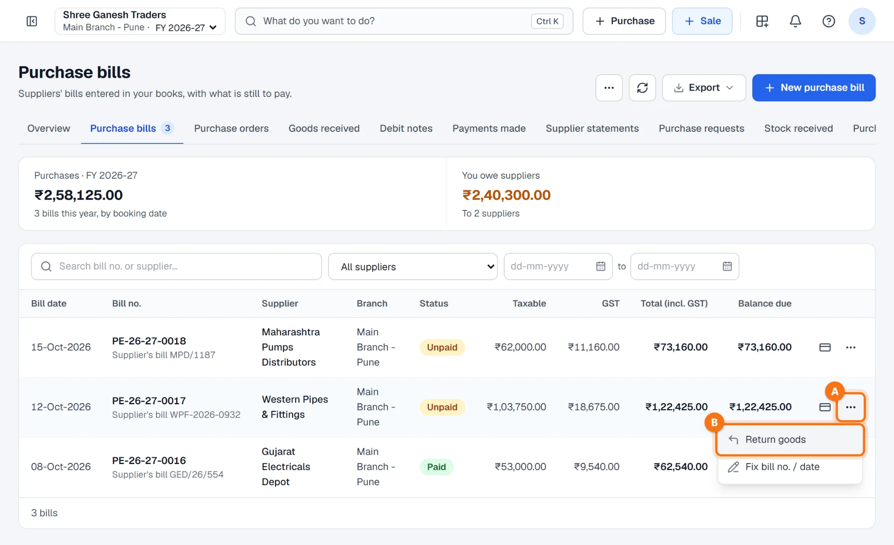
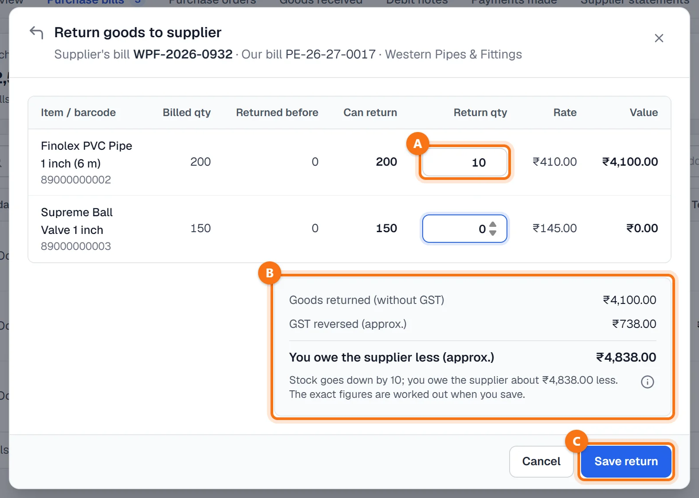
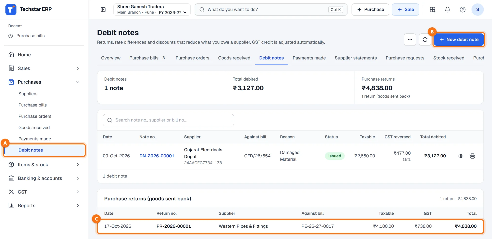
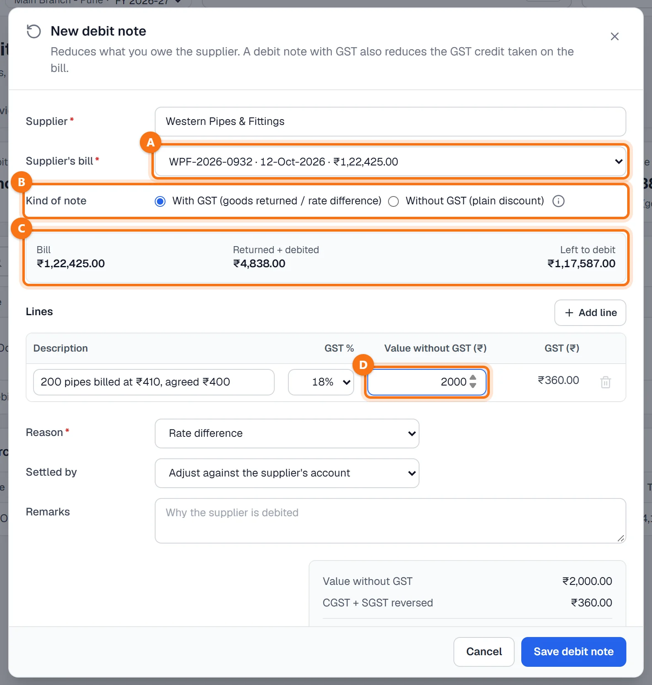
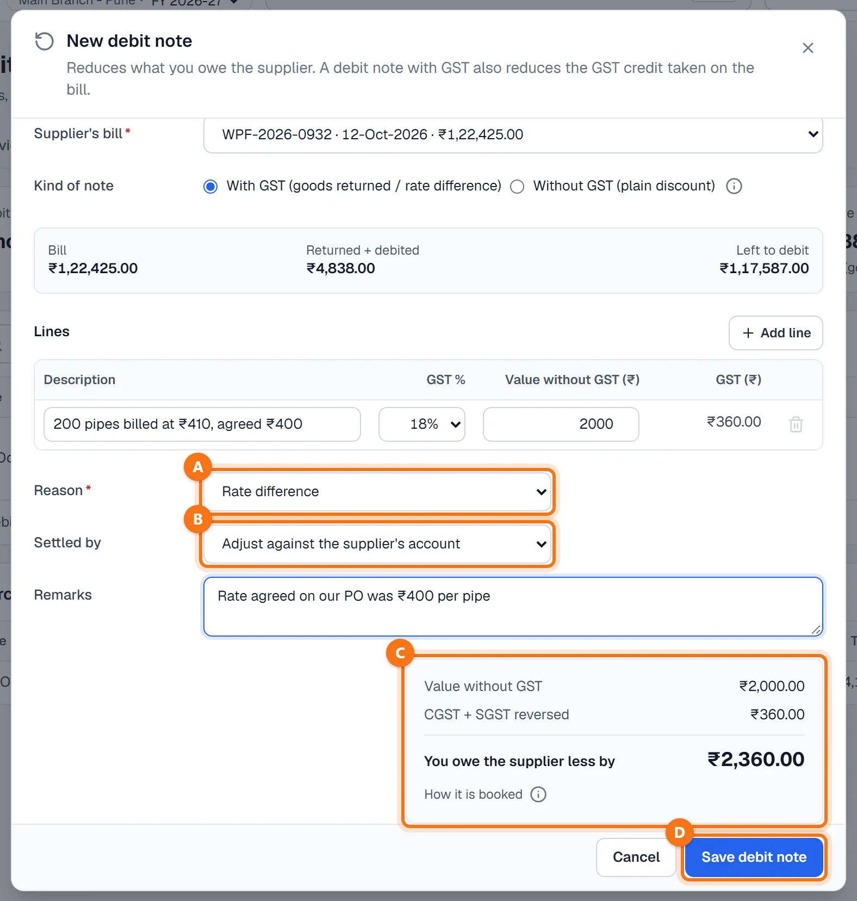
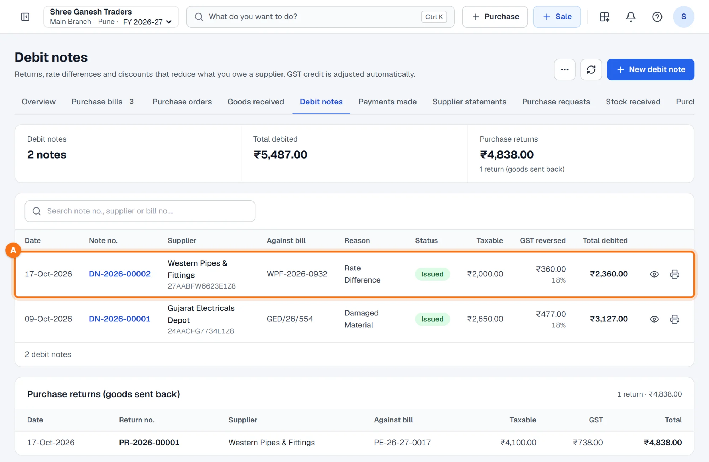

Techstar ERP मराठी आणि हिंदीतही वापरता येतो. वर उजवीकडे तुमच्या नावाच्या आद्याक्षराच्या गोल बटणावर click करा → Language (भाषा) → मराठी. ERP चा menu मराठीत दिसतो (उदा. Sales = विक्री). बिले आणि इतर कायदेशीर कागदपत्रे नेहमीप्रमाणेच छापली जातात. या guide मधले screenshots English menu चे आहेत.
सुरू करण्यापूर्वी
सप्लायरचे बिल आधी टाकलेले असावे (पहा खरेदी बिल कसे टाकायचे). परतावा आणि GST डेबिट नोट दोन्ही त्या बिलावरच बनतात.
कोणते वापरायचे:
- Return goods (माल परत) — माल सप्लायरकडे परत जातो. स्टॉक कमी होतो, आणि बिलाची बाकी, सप्लायरची बाकी व GST क्रेडिट कमी होते.
- डेबिट नोट — माल हलत नाही: दरातील फरक, खरेदीनंतरची सूट, खराब किंवा नाकारलेला माल रकमेवर मिटवणे. फक्त रकमा (आणि GST सह असेल तर GST क्रेडिट) बदलतात.
बिलावर माल परत करा
Purchases → Purchase bills उघडा (मराठी menu मध्ये: खरेदी → खरेदी बिले), बिलाच्या ओळीतील ⋯ A वर click करा आणि Return goods B निवडा. बिलाचा सगळा माल परत गेल्यावर हा पर्याय दिसत नाही.

नग टाका आणि परतावा save करा
Return goods to supplier विंडोमध्ये सप्लायरचा बिल नंबर, आपला बिल नंबर आणि सप्लायर दिसतो. प्रत्येक आयटमसाठी बिलातील नग, आधी परत केलेले नग आणि परत करता येणारे नग (Can return) दिसतात.
- Return qty A — परत करता येणाऱ्या पूर्ण नगांपासून सुरू होते. तुम्ही परत पाठवत असलेले नग टाका, आणि ठेवून घेत असलेल्या आयटमसाठी 0.
- खालच्या बॉक्समध्ये B परत केलेल्या मालाची GST शिवायची किंमत, उलटवला जाणारा GST आणि सप्लायरला किती कमी देणे — हा अंदाज असतो; अचूक आकडे save करताना काढले जातात. Reverse charge बिलावर फक्त मालाची रक्कमच देण्यातून कमी होते.
Save return C वर click करा. Return saved. Stock and the supplier's balance are updated. असा संदेश येतो. बिलावर आता Part returned दिसते (सगळा माल परत गेला तर Returned).

Debit notes उघडा
डाव्या menu मध्ये Purchases → Debit notes A वर click करा (मराठी menu मध्ये: खरेदी → डेबिट नोट). इथे डेबिट नोटची यादी — प्रत्येक नोट कोणत्या बिलावर, कारण, उलटवलेला GST आणि एकूण डेबिट — दिसते. त्याखाली Purchase returns (goods sent back) मध्ये Return goods ने केलेले परतावे C PR-… नंबरसह दिसतात.
+ New debit note B वर click करा.

सप्लायर, बिल आणि नोटचा प्रकार निवडा
- Supplier — नाव, GSTIN किंवा मोबाईल टाइप करून सप्लायर निवडा.
- Supplier's bill A — ज्या बिलावर डेबिट करायचे ते बिल (सप्लायरची अलीकडची बिले दिसतात). ओळींचे GST दर त्यातूनच येतात.
- Kind of note B — With GST (goods returned / rate difference) बिलावर घेतलेले GST क्रेडिट कमी करते; Without GST (plain discount) ने GST क्रेडिट बदलत नाही आणि ती GST रिटर्नमध्ये येत नाही. GST सह नोटला बिल निवडावेच लागते.
- राखाडी बॉक्समध्ये C बिलाची एकूण रक्कम, आधी परत केलेले किंवा डेबिट केलेले आणि अजून डेबिट करता येणारी रक्कम (Left to debit) दिसते. त्यापेक्षा मोठी नोट save होत नाही.
- Lines — वर्णन, GST %, आणि Value without GST (₹) D; GST आपोआप मोजला जातो. दुसऱ्या GST दरासाठी + Add line वापरा.

अनेक बिलांसाठी एकच नोट. बिल निवडल्यानंतर + Add another bill of this supplier ने त्याच सप्लायरची आणखी बिले जोडता येतात; Split the debit oldest first नोट त्यांच्यावर जुन्या बिलापासून विभागते, किंवा प्रत्येक बिलाचा हिस्सा स्वतः टाका.
कारण आणि सेटलमेंट निवडा, मग save करा
- Reason A — Rate difference (दरातील फरक), Discount after purchase (खरेदीनंतरची सूट), Damaged goods (खराब माल), Rejected for quality (गुणवत्तेमुळे नाकारले) किंवा Goods returned (माल परत).
- Settled by B — Adjust against the supplier's account (देणे कमी होते), किंवा सप्लायरने पैसे परत दिले तर Refund received in bank / in cash.
- Remarks — सप्लायरला डेबिट का केले ते.
बेरजेत C GST शिवायची रक्कम, उलटवलेला CGST + SGST (किंवा IGST) आणि You owe the supplier less by (सप्लायरला इतके कमी देणे) दिसते. Save debit note D वर click करा.

Save झाल्यानंतर
Debit note DN-… saved. You owe the supplier less. असा संदेश येतो आणि नोट यादीत सर्वात वर A बिल, कारण, उलटवलेला GST आणि एकूण डेबिटसह दिसते. हिशोबात ती Purchases आणि बिलाचा input GST क्रेडिट करते आणि सप्लायरला डेबिट करते (परतावा असेल तर रोख / बँक); GST शिवायची नोट Discount Received क्रेडिट करते.

नोट रद्द करणे. नोट उघडा (डोळ्याचा आयकॉन) → Cancel note आणि कारण द्या. तिची जर्नल एंट्री तिच्याच तारखेला उलटवली जाते, आणि बिलाची बाकी, सप्लायरचे खाते व GST क्रेडिट परत येते. मालक, admin, accountant किंवा branch manager रद्द करू शकतात. नोटचा महिना हिशोबात बंद असेल, किंवा त्या महिन्याचा GST रिटर्न आधीच भरला असेल तर रद्द करता येत नाही — मग खुल्या महिन्यात नवीन नोटने दुरुस्ती करा.
नेहमीचे प्रश्न
डेबिट नोटचे कारण “Goods returned” निवडले. स्टॉक कमी होतो का?
सप्लायरने बिलानंतर GST शिवाय सूट दिली.
बिलाचे पैसे आधीच दिले आहेत. तरी माल परत करता येतो का?
GST साठी डेबिट नोट कुठे दिसतात?
आणखी guides
Screenshots Techstar ERP मधील demo कंपनीचे आहेत (Shree Ganesh Traders, Pune). सर्व नावे, GSTIN, रकमा आणि कागदपत्रांचे नंबर नमुना माहिती आहेत.